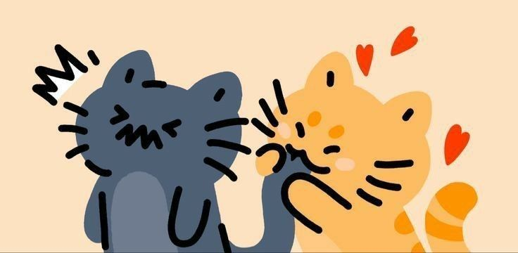
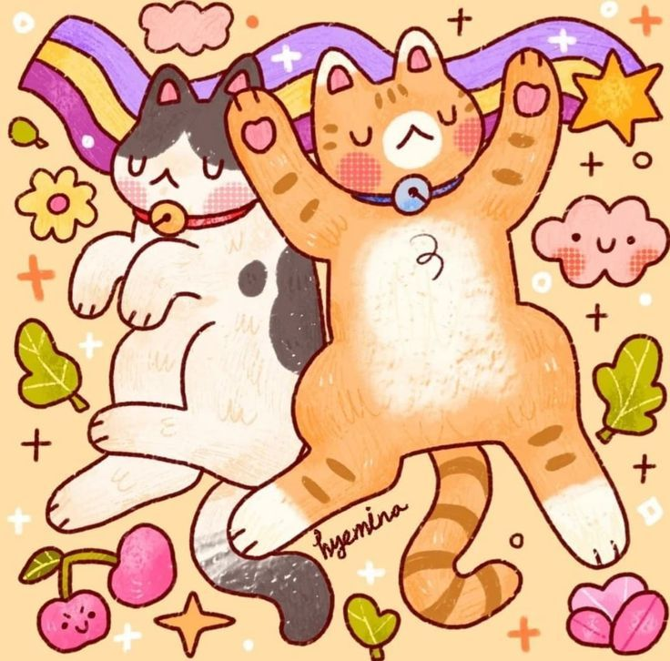
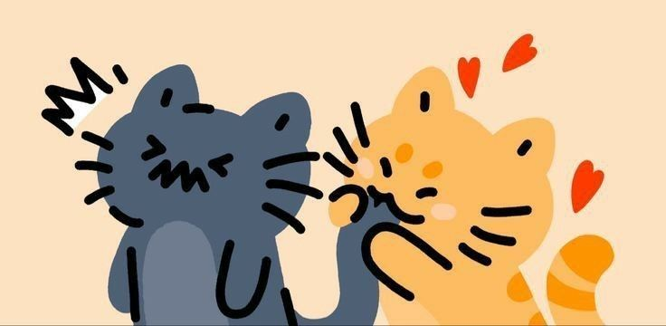
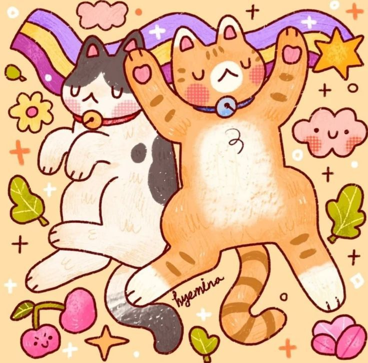
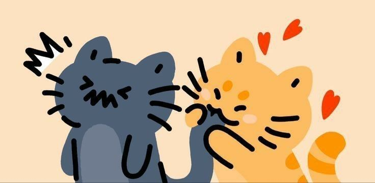
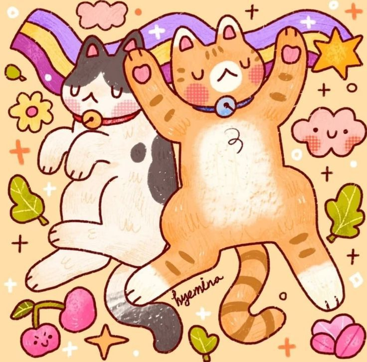
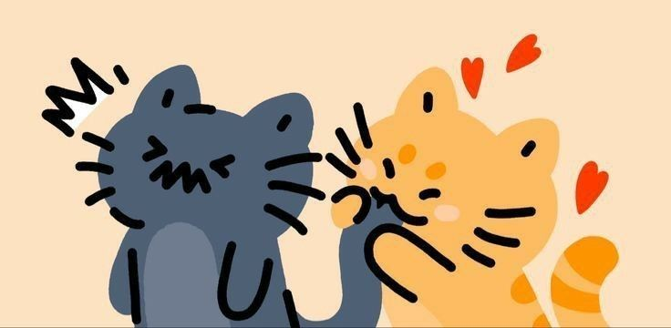
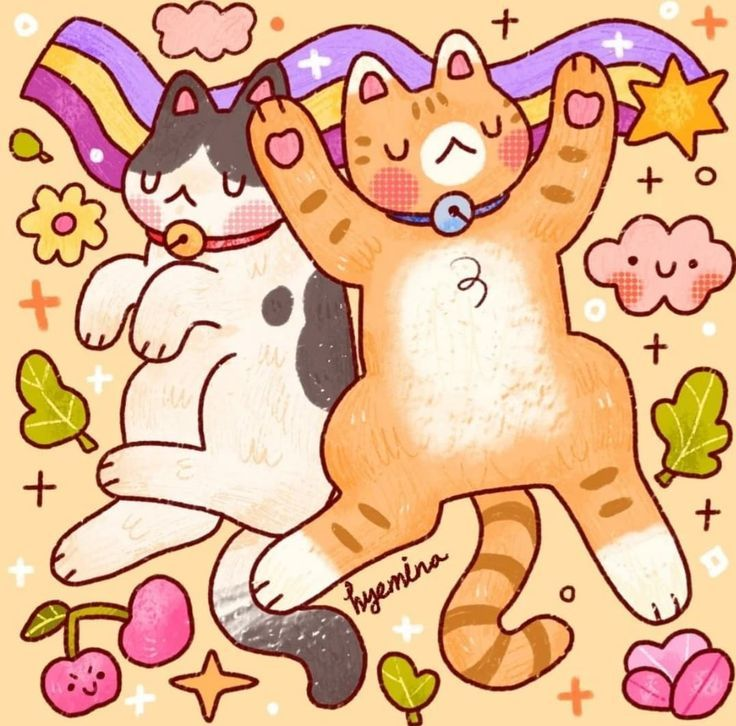

Bienvenida a lo que sea esto (es una carta de amor vale?):
No sé por dónde empezar exactamente, tengo tantas cosas que agradecerte... Nunca pensé que iba a ser capaz de encontrar a alguien que me fuese a apoyar tanto, con tanta paciencia y amor.
Tampoco pensé que me iba a encontrar en la situación de tener que estar escribiendo una carte de amor (me esta costando más de lo que pensaba) pero aquí estoy intentado sacar lo que no soy capaz de decirte en los días normales.
Me encanta cuando cocinas para mí, como te preocupas por lo que me gusta y le das toda la importancia del mundo a todo lo que me concierne.
Adoro cuando me mandas mensajitos de buenos días, cuando hablamos por teléfono para contarnos el día y tengo que estar dando vueltas por las calles porque no te quiero colgar.
Que no te dé verguenza a expresar tus sentimientos y que me hagas sentir querida e importante, que pongas tanto esfuezo en hacerme sentir bien y cómoda contigo, es de las cosas más bonitas que han hecho por mí.
Por mucho que te lo diga y lo intente, creo que nunca voy a poder expresar bien cómo realmente me siento contigo, porque es muy fácil decir "te quiero" o "te adoro", pero es muy díficil demostrarlo, y tú lo has conseguido. Por eso no sólo te quiero, sino que también te admiro, te respeto y te agradezco todo lo que haces por mí. Incluso aquellas cosas que haces y no me doy cuenta de ellas.
Muchas gracias por ser cómo eres, por quererme tanto y hacer que este año pase tan rápido.
Te quiero mucho, Luz.